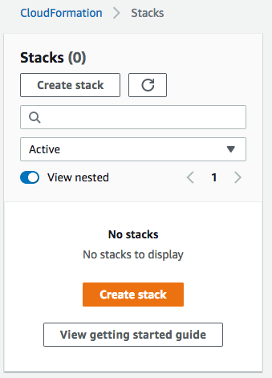

AWS CloudFormation 콘솔에서 스택 생성
스택을 생성하기 전에 AWS CloudFormation이 스택에 포함할 리소스를 설명하는 템플릿이 있어야 합니다. 자세한 내용은 AWS CloudFormation 템플릿 사용 섹션을 참조하세요.
참고
새 스택의 구성을 미리 보려면 변경 세트를 사용할 수 있습니다.
CloudFormation 콘솔에서는 다음 단계로 구성된 간단한 마법사 기반 프로세스를 통해 스택을 생성합니다.
스택을 생성한 후 스택 진행 상황을 모니터링하고, 스택 리소스 및 출력을 보고, 스택을 업데이트 및 삭제할 수 있습니다. 이러한 작업에 대한 정보는 연결된 주제에서 제공됩니다.
스택 생성 마법사 시작
CloudFormation 콘솔에서 스택을 생성하려면
-
AWS CloudFormation 콘솔(https://console.aws.amazon.com/cloudformation
)을 엽니다. -
다음 옵션 중 하나를 사용하여 새 스택을 만듭니다.
-
스택 생성을 선택합니다. 현재 실행 중인 스택이 있는 경우에는 이 옵션이 유일한 옵션입니다.
-
Stacks(스택) 페이지에서 Create Stack(스택 생성)을 선택합니다. 현재 실행 중인 스택이 없는 경우에만 이 옵션이 표시됩니다.

-
다음으로, 스택 템플릿을 선택합니다.